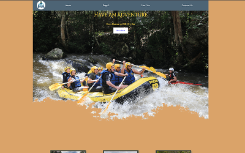
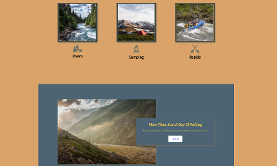

Examples Of My Work
Here is an example of my work below. My experience is limited but with the help of your company offering me an intern position, I can expand my portfolio and learn so much more. I also linked the live github page. This example was done in a web development class where we learned how to write code for HTML and CSS. We also learned how to position text and images on a website. I can confidently say that I have learned how to build a site from the ground up and how colors and fonts make a huge difference in the user experience. I learned that colors should have a complimentary contrast and fonts should be selected carefully depending on the audience and purpose of the website. In this particualr example, we built a site that was for a water rafting site. My goal for the fonts and colors I chose was to reflect earthy tones because of the outdoor nature of the site. I also wanted it to look professional and neat. I chose this font because it looked like "waves" with the way it has sublte curves and I feel that it gave the site more character and a certain element of "fun". After all, this was supposed to attract adventurous people.

